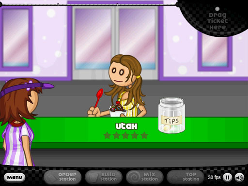
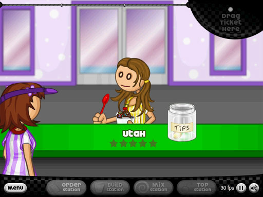

PLAY NOW

PLAY NOW

Frequently Asked Questions
Gameplay involves managing four stations: Order (take customer orders), Build (add ice cream, mixables, and syrups), Mix (blend the sundae), and Top (add whipped cream and toppings). Follow customer tickets accurately and quickly to earn high scores and tips. Play Papa’s Freezeria online game free.
Yes, you can play Papa's Freezeria without Flash on websites like Coolmath Games and CrazyGames using emulation technology. You can also Play Papa’s Freezeria online game free on MAGBEI GAMES.
If the game isn't working, ensure you're on a desktop PC with a supported browser (Chrome or Firefox), clear your cache, and disable ad blockers. For reliable play, Play Papa’s Freezeria online game free instead.
Several versions exist besides the original Flash game: Papa's Freezeria Deluxe on Steam, To Go! and HD mobile editions. Try them all or Play Papa’s Freezeria online game free.
The Deluxe PC version adds new customers, recipes, and lobby decor; the To Go! and HD mobile editions are optimized for touchscreens and smaller displays, featuring adapted mechanics like a topping carousel.
Precision is key: in the Build Station, stop the meter at center; in the Top Station, place toppings exactly where requested. Practice often to master it!
You can play the emulated Flash version on Coolmath Games and CrazyGames, purchase Deluxe on Steam, or download mobile editions. For easiest access, Play Papa’s Freezeria online game free now.
"Closers" are picky late‑day customers. Check the customer tab to see who's coming and prepare their orders ahead of time for high scores.
"Special Recipes" are unique sundae formulas tied to special customers. Serving them correctly unlocks new recipes to offer in your shop.
Earn tips to buy station upgrades, lobby decorations, and character outfits. Prioritize efficiency upgrades first. Ready for more practice? Play Papa’s Freezeria online game free!
It's accessible for beginners but challenging to achieve consistent perfect scores as customers and ingredients increase.
Yes — mobile editions have built‑in save systems, and some emulated versions on Coolmath Games support progress backups.
Papa's Freezeria was developed by Flipline Studios and originally released in August 2011 as the fourth title in their lineup.
It’s a business simulation and time‑management game, focusing on resource management and order optimization to earn virtual currency.
Serving high‑quality orders earns stars, promoting customers to higher ranks for bigger tips and more points.